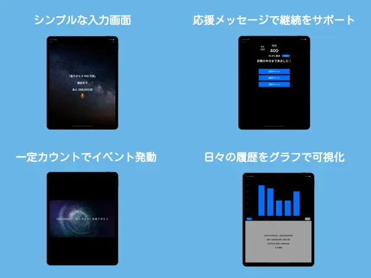

心学研究家の故・小林正観氏は、「ありがとう」という言葉を口癖のように唱えると、自分でも信じられないような出来事が起き、健康や運命が好転していく「ありがとうの法則」を説いていました。
ありがとうを100万回も数えるのは大変です。そこで「唱える事だけ」に集中してもらい、達成までを応援できるようなアプリを作りました。
使用技術
・Swift
・MVP Architecture
・Firebase Authentication
・Firebase Realtime Database
・Github Actions
URL
https://apps.apple.com/jp/app/id6503597384
リポジトリ
https://github.com/simazo/ArigatouApp
背景
あるプロジェクトでswiftのコードレビューをする機会があり、IOS開発に興味を持ったのがきっかけでした。apple申請も含めリリースまでの一通りの流れを体験したく開発に至りました。
アプリの目的
「ありがとう」という発話だけを100万回までカウント、支援すること。
ターゲット
「小林正観」さんや「100万回の奇跡」をご存知の、めちゃくちゃニッチな層。
デザインについて
Google Fit（歩数計アプリ） を参考にしました。「ありがとう」の発話を「歩数」のように扱い、 日・週・月単位での記録や変化を視覚的にわかりやすく表示できるように設計しました。
たとえば：
・ホーム画面では、その日の「ありがとう」回数をすぐに確認できるように配置。
・日々の増減や傾向をひと目で把握。
・週ごと・月ごとにデータをグラフで閲覧。
コーディングについて
・（理解を深める目的で）あえてSwiftUIではなく、一昔前のUIKitベースで実装。
・MVPアーキテクチャで実装しました。
・最初の１ヶ月は、IOS開発の専門家にコードレビューしていただきました。